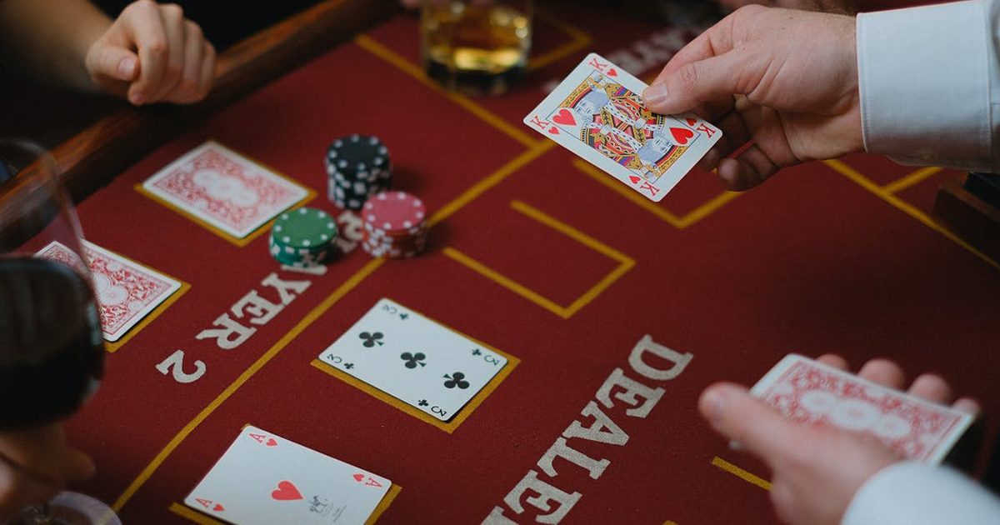

Mastering the Turn: Strategy and Psychology in Poker. The third round of betting that comes after getting the fourth community card, is an essential skill for any poker player looking to boost their win rate. In general, the later streets are harder to navigate than the earlier ones for a few reasons. Not only does the pot increase exponentially in size in No Limit Hold ‘Em, making mistakes costlier, but blunders on previous streets, such as improperly balancing one’s range, can manifest later and cause huge problems.
Why Turn Strategy Poker Matters？ We want a proactive mindset, not a reactive one. That means thinking ahead to the turn and the river while still on the flop, or even before the flop.
Overall, turn strategy isn’t too different than flop strategy. We’re still going to rely on range analysis, but we’ll do a little less bluffing because bluffs are more expensive when the pot is bigger and because the average hand on the turn is stronger than one on the flop.

Continuation Betting the Turn
A turn c-bet is when the flop aggressor continues to bet on the turn, either for value or as a bluff. Keep in mind though, that equities become closer on the turn, so we’ll usually use a polarized betting strategy where we bet our best hands and draws for value and our weakest hands as bluffs while throwing away everything in the middle.
Remember to always think about how the turn card interacts with both your range and your opponent’s range. Decisions about what types of hands to c-bet are strongly influenced by the type of turn card.
Over cards or draw completing cards, for instance, can either make or break you. If the turns a blank, on the other hand, then we can keep going with what we decided to do on the flop.
Checking the Turn
There are a few places where it makes the most sense to check the turn. First off, if you’re out of position, you’re much more likely to check than bet since you have incomplete information. Second, if your holdings aren’t polarized, then you want to protect against being raised off your equity.
Let’s say, for instance, you have a pair of tens, and the board brings an overcard on the turn. You have some showdown value that you’d like to realize, but your opponent’s range could easily contain that overcards. If you bet and then get raised, you’re going to be in a bad position, and you’ll have to fold. However, if you check and get raised, you can still call.
Check with hands that are not good enough to call a raise but have relatively high equity that’s worth realizing.